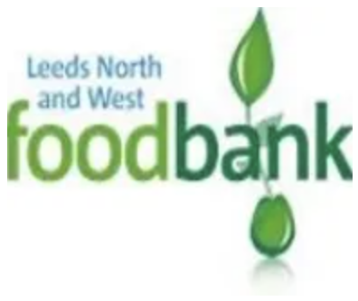
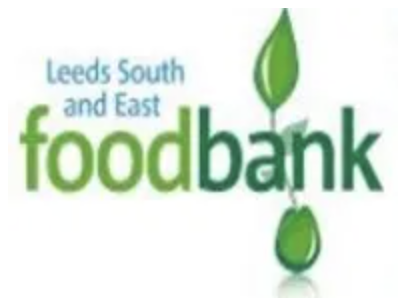
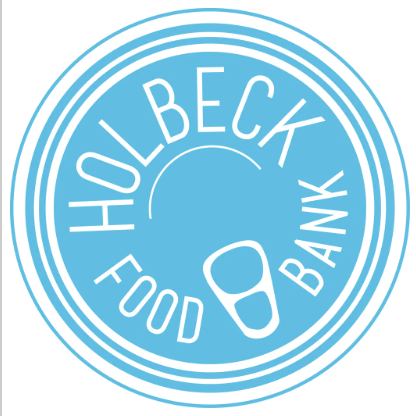
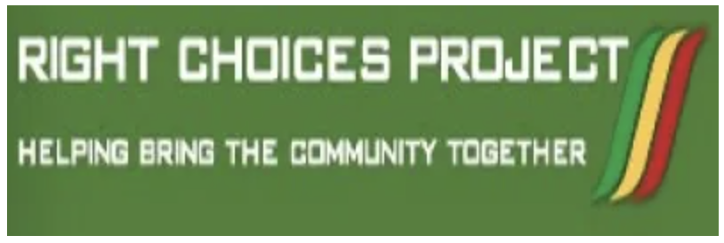
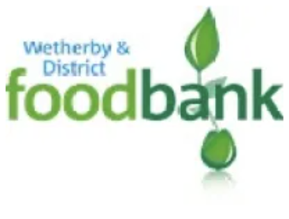

Food Banks
See below for a document which has a broad overview of foodbank and more general food aid provision.
Food banks have seen a significant increase over the last decade, not just in Leeds, but across the United Kingdom. As with any definition, it is subjective and open to interpretation as to how one defines a Food Bank. Two key characteristics that are often found at foodbanks are that the person who is receiving food has often been referred by another agency/group, using some kind of referral system. Secondly, the recipient receives a food parcel which they take back to their house/accommodation when accessing.
Leeds North and West and South and East Foodbanks
Many of the outlets of these Trussell Trust foodbanks have started to reopen since the height of the pandemic. Please see below for relevant opening times.
To register as an agency for online referrals, please contact either of the foodbanks directly by email:
The new National Citizens Advice helpline freephone number – 0808 208 2138 (Monday to Friday, 10am to 4pm) can also help people with getting a referral.

Leeds North & West Food Bank
Feeding local people in crisis. 13 million people live below the poverty line in the UK. Our foodbank provides a minimum of 3 days emergency food and support to local people in crisis.
As well as providing food, our volunteers offer a listening ear, offer prayer if appropriate, and suggest where further help and support may be available. Whatever their situation, beliefs or background, everyone is welcomed.
Open Outlets
- Woodhouse Distribution Centre – MONEY BUDDY SERVICE AVAILABLE: Gateway Church in St Marks Church, St Marks Road, LS2 9AF, Mondays 11am – 1pm
- Farnley & Wortley Distribution Centre: St Johns Church, Dixon Lane Road, LS12 4RU, Mondays 12pm – 2pm
- Burley Distribution Centre – MONEY BUDDY SERVICE AVAILABLE: St Matthias Church Centre, St Matthias Street, LS4 2DZ, Tuesdays 10am – 12noon
- Bramley Distribution Centre – MONEY BUDDY SERVICES AVAILABLE: St Peter’s Church, Hough Lane, LS13 3NF, Tuesdays 10:30am – 12:30pm
- Moortown Distribution Centre – MONEY BUDDY SERVICE AVAILABLE: 53-55 Cranmer Bank, Moortown, Leeds, LS17 5JD, Wednesdays 11 – 1pm.
- Ireland Wood Distribution Centre – MONEY BUDDY SERVICE AVAILABLE: St Pauls Church, Raynel Drive, LS16 6BS, Thursdays 10:30am – 12:30pm
- Armley Distribution Centre – MONEY BUDDY SERVICE AVAILABLE: Christ Church Armley, Armley Ridge Road, LS12 3LE,Thursdays 12noon – 2pm

Leeds South & East Food Bank
Leeds South and East Foodbank is part of the Trussell Trust Foodbank Network. We are one of over 400 Foodbanks, providing emergency food to people in crisis, nationwide.
We give food to people in a state of crisis who are living in the South Leeds area of the city. People access one of the foodbank outlets via a referral from a statutory or voluntary organisation such as doctors, health visitors, Citizen Advice Bureau, welfare offices etc…
Open Outlets
- Harehills Distribution Centre – Money Buddies Service Available: St Cypriene’s Church, Bellbrooke Ave, Harehills, LS9 6AU, Mondays 10:30am – 12:30pm
- Beeston Distribution Centre – Money Buddies Service Available: St Andrews Church, Cardinal Road, LS11 8AL, Mondays 11am – 1pm
- Gipton Distribution Centre – Money Buddies Service Available: Church of the Epiphany, Beech Lane, LS9 6SW,Tuesday 10am – 12noon
- Morley Distribution Centre – Money Buddies Service Available: Morley Central Methodist Church, 10a Wesley Street, LS27 9SL, Tuesdays 10:30am – 12:30pm
- Hunslet Distribution Centre – Money Buddies Service Available: Hunslet Methodist Church, Telford Terrace (Off Balm Road), LS10 2HR, Wednesdays 10am – 12noon
- Halton Distribution Centre: St Wilfrid’s Church, Selby Road, LS15 7NP, Wednesdays 11am – 1pm
- Rothwell Distribution Centre: Rothwell Fire Station, 31a Carlton Lane, LS26 0DH, Thursdays 10am – 12noon
- Osmondthorpe Distribution Centre – DIAL & Money Buddies Services Available: St Philip’s Church, 68 Osmondthorpe Lane, LS9 9EF, Thursdays 11am – 1pm
- Middleton Distribution Centre – DIAL & Money Buddies Services Available: The Ark Centre, 80 Throstle Lane, LS10 4EY, Thursdays 12noon – 2pm
- Belle Isle Distribution Centre – Money Buddies Service Available: Belle Isle TMO, Aberfield Gate, LS10 3QH, Fridays 1:30 – 3:30pm

Holbeck Food Bank
Holbeck Food Bank delivers crisis food parcels to clients living in Holbeck and Beeston following referrals from a professional agency. We are available Monday to Friday to do deliveries to any addresses that are within LS11.
To make a referral please download the referral form by clicking the icon which will take you through to the Holbeck Foodbank.
Referrals can only be made by e-mail and you will receive a quick response with details of delivery.
All referrals received between 9am-4pm Monday-Friday will be delivered with within 24 hours. Weekend referrals may take longer.
Click icon for website.

Right Choices Food Bank
Right Choices Food Bank is a city-wide service, however, is based in Headingley Leeds and is run solely by volunteers. We open the food bank on Wednesdays between the hours of 11am to 12:30pm.We also provide a delivery service to the most vulnerable people within our community areas we deliver to LS 2,3,4,5 and 6.
Right Choices Project,Heart Centre, Leeds, West Yorkshire, LS6 3HN.
If you do have any enquiries or want to make a referral please either e-mail or telephone.
Mobile – 07505 865 317
Email – rightchoices1@yahoo.co.uk
Otley Food Bank
Otley Food Bank opened in December 2013. We serve Otley and surrounding areas (interpreted flexibly, including Pool, Leathley, Farnley, Guiseley, Menston and Burley). Any voluntary or statutory agency can fill out a voucher for someone in crisis and collect 3 days’ food for a client in the locality during our opening hours or by arrangement. We have 2 helpline numbers which are on call during the day. If necessary we can usually deliver food parcels.
To make a referral contact us on: Mobile:- 07464 974993 or 07776 079321
Email:- otleyfoodbank@gmail.com. Location will be revealed once referral made.
Opens Mondays 11:30 – 12:30 and Thursdays 9:30 – 10:30
Click icon for website.

Wetherby District Food Bank
We are a Trussell Trust seeded Foodbank, opened in October 2014. We have a Distribution Centre in Barleyfields Road, Wetherby and a Warehouse on the Thorp Arch Industrial Estate. We are run entirely by volunteers, and seek to reach into the rural villages in the local area. At present we are collecting more food than we have Clients, and have therefore been able to assist other Foodbanks in Leeds and the surrounding area with provisions.
Barleyfields Community Centre (opens Tuesdays 10:00 – 11:30, Fridays 10:00 – 11:30 and Saturdays 10:30 – 11:30) Barleyfields Road, LS22 6PN
The Barn Community Centre (opens Wednesdays 10:30 – 12:00) St Joseph’s Street, LS24 9HA
Email – info@wetherbyanddistrict.foodbank.org.uk
Website – www.wetherbyanddistrict.foodbank.org.uk
Facebook – Wetherby and District Foodbank

Salvation Army Sites
Salvation Army Hunslet and Morley – Food parcels available from Hunslet Hall Rd, Hunslet Leeds, LS11 6QB OR Salvation Army Morley, 75 Ackroyd St, Morley, LS27 8PZ.
For LS11 contact Leeds West Hunslet on 0113 2423709
For LS27 contact us on 0113 2380422 or morley@salvationarmy.org.uk